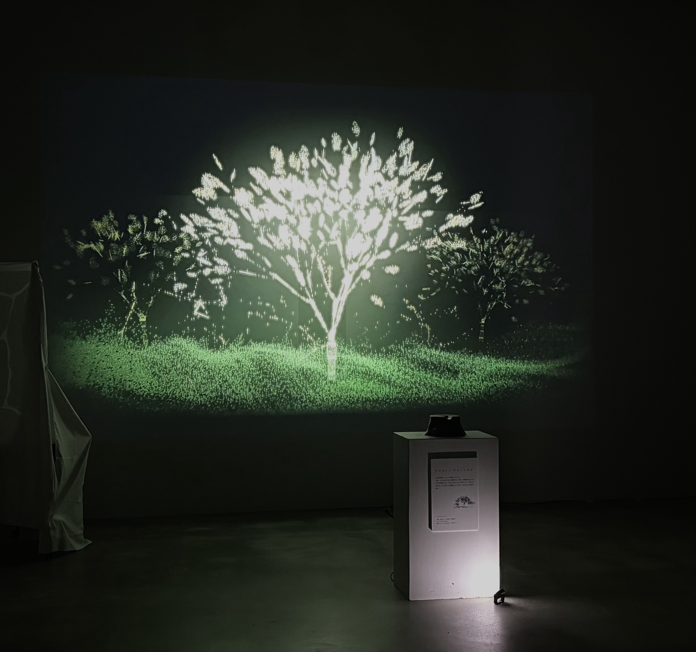
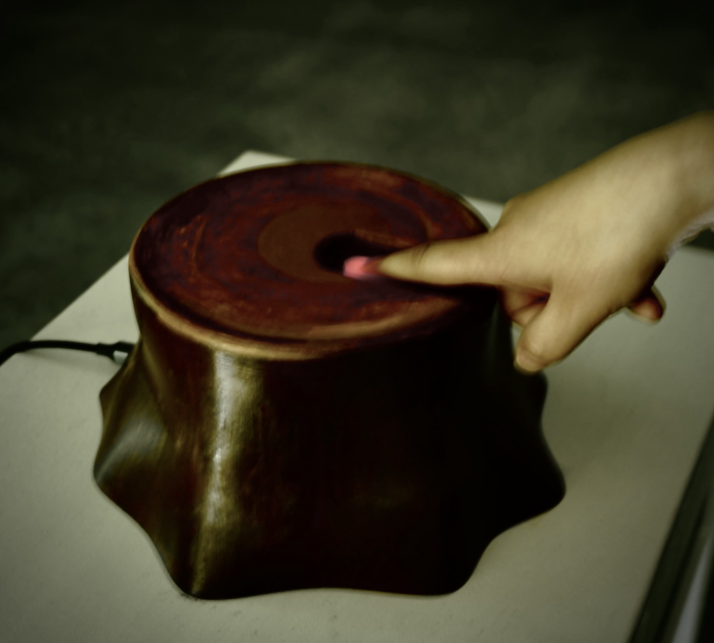
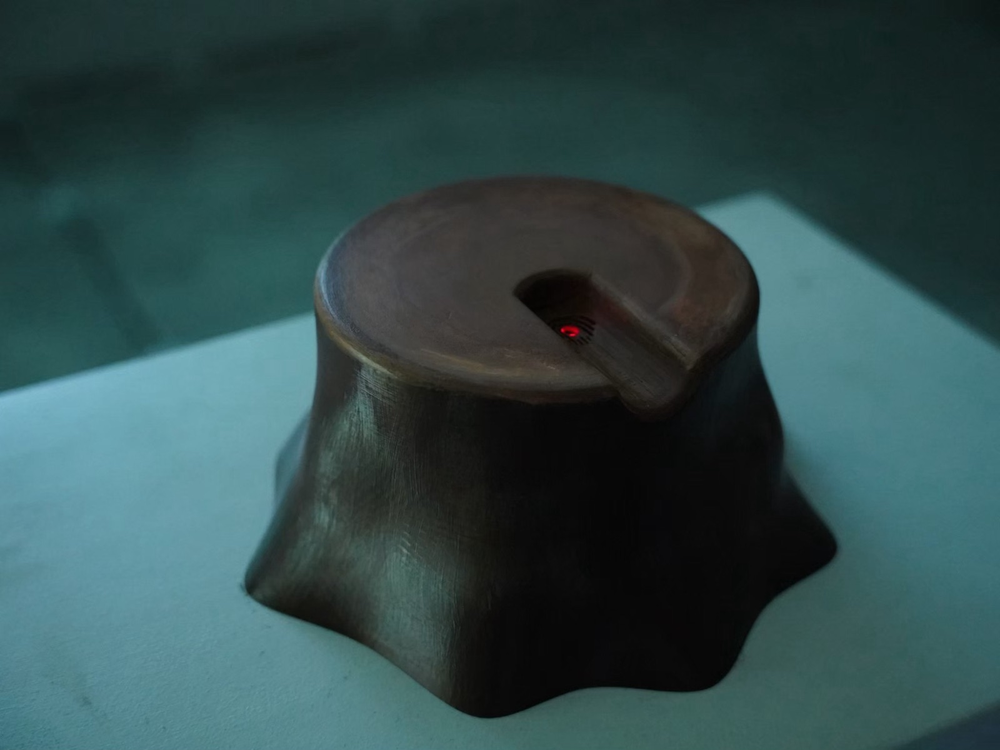
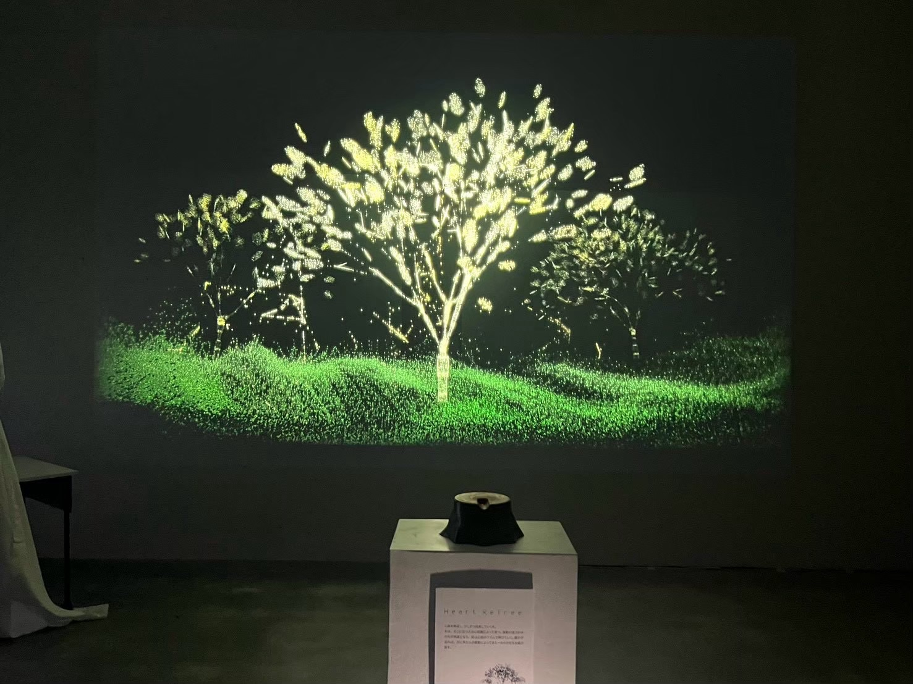
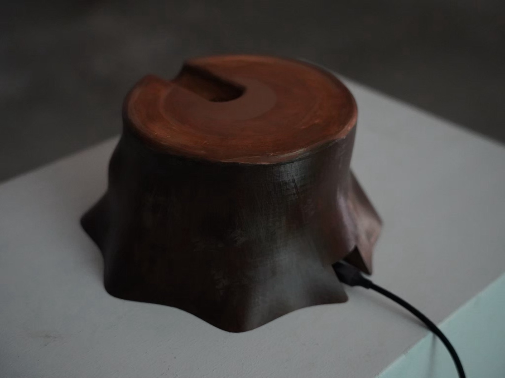
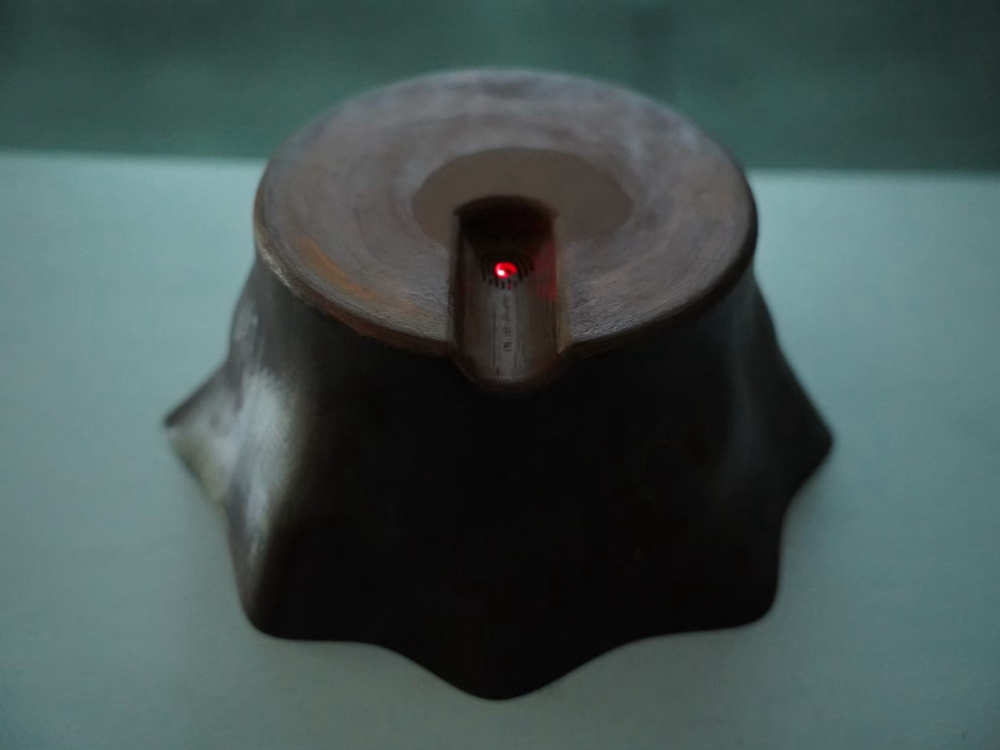

Interactive Art / 2026
Heart Re Tree
- 制作年
- 2026年
- 作品カテゴリー
- インタラクティブアート
- 制作期間
- 2026年6月16日〜7月27日
- 展示期間
- 2026年6月27日・28日
- 展示場所
- 長岡造形大学 スタジオB
- 使用ツール
- TouchDesigner、Autodesk Fusion、Arduino IDE
- 制作チーム

長岡造形大学 デザイン学科
谷楓・清水ゆめ・野澤実来・高井遥加
作品映像
コンセプト
心拍という、普段は意識しないものを可視化するインタラクティブアートです。
切り株の形をした台に指を置くと、内部の心拍センサーが脈拍を計測します。計測した心拍数に応じて、スクリーンの木が発光しながら成長し、鼓動のリズムで明滅していきます。木の姿は体験する人ごとに変わり、人それぞれ違う心拍のリズムを、目に見える「成長」として体験できるようになっています。
木は一本の立体モデルではなく、無数の光の粒子の集まりとして描きました。鼓動を血液の循環、血液を粒子、そして細胞の集まりと捉え、生命が絶えず巡りながら育っていく様子を表しています。モチーフには、展示を行った新潟県長岡市の木であるケヤキを選びました。人の心拍をテーマにしているため、人間の寿命に近い時間を生きる木であることも理由のひとつです。
木が育ちきったときの大きさは、誰が体験しても同じです。違いが現れるのは、育つ速さと光り方。大きさをそろえることで、自分と他の人の鼓動の違いを見比べられるようにしました。
会場には、木々のざわめきと鳥の声の環境音を流しました。自分と木が同じ森の中にいるという実在感を支えるためです。一定のリズムで刻まれる心拍に、鳥の声の不規則なアクセントが重なることで、木が確かに育っていく様子が際立ちます。
普段は意識しない心拍や呼吸を、目の前の木として見つめる。そのとき、自分が生きていることを、少しだけ確かに感じられるはずです。
体験
-

1切り株に指を置く
切り株の上面にある窪みに、指を置きます。
-

25秒間、心拍を測る
指を置いたまま5秒間待つと、窪みの奥のセンサーが平均心拍数を計測します。
-

3木が育ち、明滅する
心拍数に応じた速さで木が成長し、鼓動に合わせて明滅します。計測が終わると発光が止まり、次の人の鼓動を待ちます。
切り株のセンサー台
台は、木の切り株の形にしました。本来なら年輪が見える上面をモチーフにし、そこに指の形の窪みを設けています。説明がなくても「ここに指を置く」とわかるように、形そのもので体験者の行動を導いています。



技術
木の映像は、TouchDesignerでリアルタイムに生成しています。植物の成長パターンをアルゴリズムで描くL-systemを使い、枝の伸び方を光の粒子で形づくりました。
切り株の中の心拍センサーが、アナログな身体とデジタルな映像の空間をつないでいます。計測した心拍数(BPM)を0.01倍した値を木の成長速度に、鼓動のリズムを発光の明滅に割り当てました。はじめは成長速度だけで違いを表していましたが、発光も心拍に合わせることで、違いがよりはっきりと伝わるようにしています。
- 身体指先の脈拍切り株の中の心拍センサー
- 計測5秒間の平均心拍数Arduino → シリアル通信
- 生成木の成長と明滅TouchDesigner・L-system
- 空間壁面への投影プロジェクター